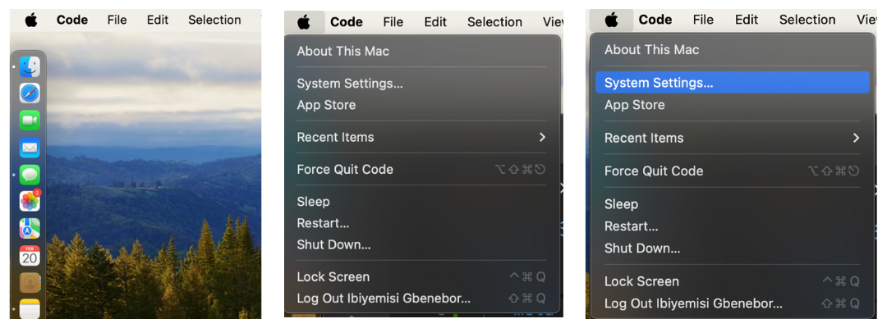
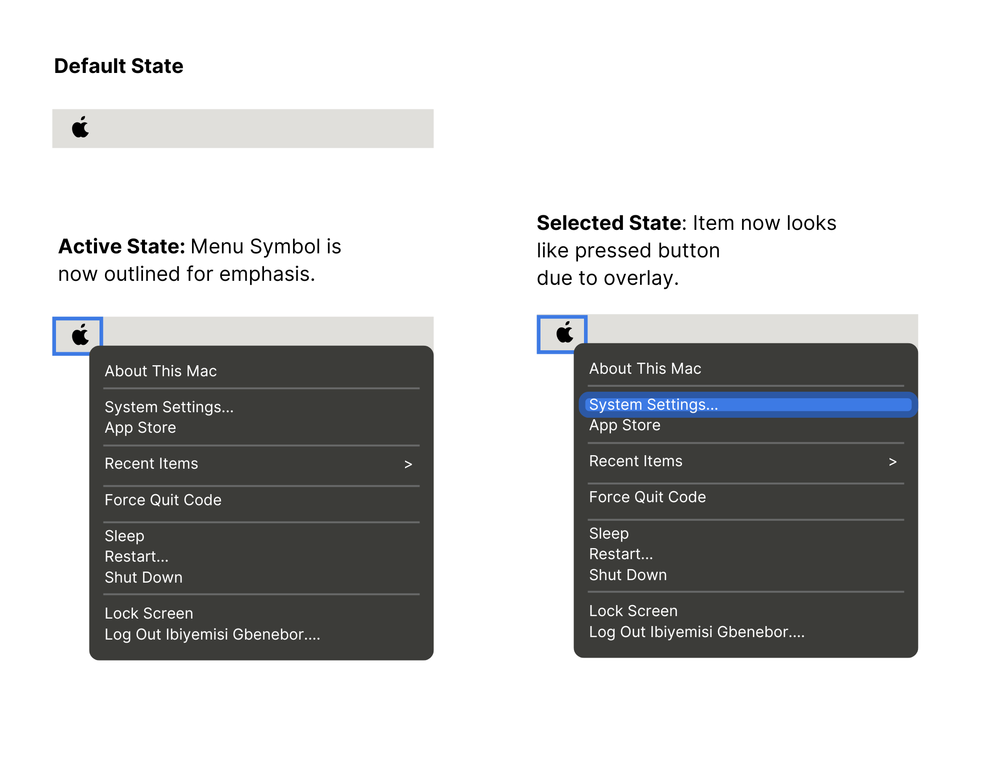

Skills: UI/UX Design - Canva - Accesibility Auditing
Designed Spring 2025
A dropdown menu is a fundamental UI component that enhances navigation by organizing options efficiently. However, accessibility varies across implementations. This case study explores how dropdown menus function using mouse, keyboard, and touch interactions, analyzing their usability and accessibility.
Designer: Yemisi Gbenebor, ibiyemisi_gbenebor@brown.edu
This section showcases the original dropdown menu from Apple’s interface. By analyzing this designs, I identified key insights in interaction methods, accessibility features, and usability trade-offs within the platform. The following screenshots are from disabled, active, and selected states.

First, I interacted with the Apple Menu using just the keyboard and voiceovers, then again using a mouse to understand any accessibility issues present between both types of users.
Below, you’ll see two separate state models, each focusing on mouse and keyboard interactions. These diagrams help us visualize how a user navigates through different states when using a dropdown menu.
These diagrams reflect the existing Apple Menu that I analyzed previously.
To enlarge photos, click the image and use the tool bar. You can also click the links below.
After creating the state model for the existing Apple Menu, I created an udpated state model to address accessibility concerns. The new addtions to the state model are in purple.
To enlarge photos, click the image and use the tool bar. You can also click the links below.
Next, I used the updated state designs to create a visual for how the states would look. In this redesign, I introduced several state updates to improve learnability and memorability by using common interactions that may be familiar to the user in hopes that they will learn how to use the dropdown quickly.

These changes introduce a trade-off in efficiency. Mouse users now need to be more precise, as accidental clicks can lead to unintended selections. For keyboard users, while Tab navigation improves usability, it may slow down interaction in large menus where arrow keys alone would have been a quicker way to navigate. These trade-offs highlight the balance between learnability, memorability, and efficiency, ensuring a streamlined experience at the cost of some interaction accuracy and speed.